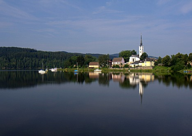

Озеро Липно
Ліпно (пол. Lipno) — озеро в Тухольських лісах, у Дзем'янській ґміні Косьцерського повіту Поморського воєводства Польщі.[1] Площа озера 41 га, найбільша глибина — 6 м.[2] Озеро перебуває під охороною як орнітологічний та торф'яний об'єкт[3] в межах заповідника «Ліпно і Ліпйонко», на території якого зафіксовано 48 видів птахів, включаючи 28 видів птахів, що гніздяться[4]. На східному березі озера побудований оглядовий майданчик для орнітологічних спостережень. Навколо озера — болота та луки, на західному березі розташований природний пам'ятник, що складається з семи ялівців, вік яких оцінюється приблизно в 100 років. [4]